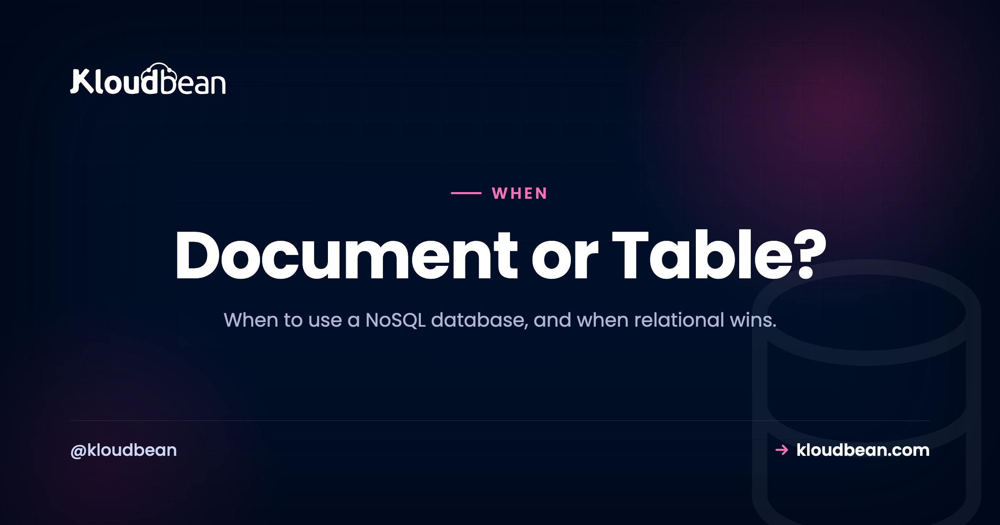
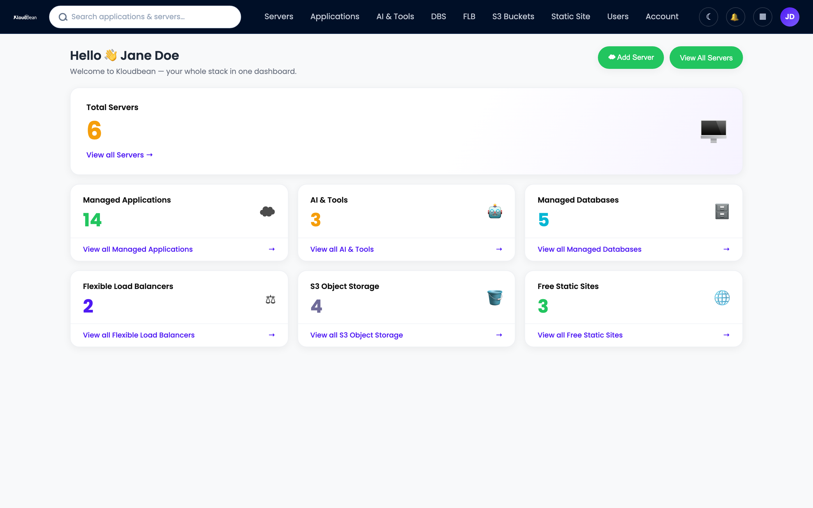

When to Use a NoSQL Database (and When You Really Don't)

Deciding when to use a NoSQL database is a call that gets made badly, and early. Someone reads that MongoDB scales, picks it for a booking app, then spends month three rebuilding joins in JavaScript. This is a plain SQL vs NoSQL decision guide, not a sales pitch. You'll get what NoSQL actually means (it's a family, not one product), when a document store fits, and why relational is still the right default for most apps.
Use a NoSQL database when your data is genuinely document-shaped, like content, catalogs with varied fields, or events and logs, or when a scale or access pattern beats what relational handles well. For most apps, built around users, orders, and things that reference each other, start relational with PostgreSQL or MySQL. And remember the middle path: Postgres JSONB stores schemaless documents inside a relational database, so you often don't need a second one.
First, "NoSQL" isn't one thing
Before you decide when to use a NoSQL database, accept that "NoSQL" isn't a product. It's a loose label for every database that isn't relational, and they have little in common with each other. Lumping Redis and Neo4j together makes about as much sense as lumping a bicycle and a cargo ship together because neither is a car.
Four families cover nearly everything people mean by the word:
- Document databases (MongoDB, Couchbase). JSON-like documents in collections. A record nests objects and arrays, so a whole order lives in one document. This is the family people picture when they say "NoSQL," and the one that competes head-on with relational for app data.
- Key-value stores (Redis, Memcached). A giant, blazing-fast hash map: give it a key, get back a value. Great for caching, sessions, and queues. Not where your source-of-truth data should live.
- Wide-column stores (Cassandra, ScyllaDB). Built for huge write throughput across many machines. Time-series, telemetry, and event firehoses at a scale most apps never touch.
- Graph databases (Neo4j). The relationships are the point. Social graphs, fraud rings, recommendation webs, anywhere the connections matter more than the things.
Document databases are the ones people weigh against SQL for app data, so that's this guide's focus. "Should I use NoSQL?" nearly always means "should I use MongoDB instead of Postgres?"
SQL vs NoSQL: the differences that actually decide it
A relational database stores rows in tables with fixed columns, and it's very good at connecting them. A document database stores self-contained documents and would rather you didn't connect them at all. That one difference, joins are cheap here and awkward there, ripples into everything else. The honest side-by-side, not the marketing one:
| Relational (SQL) | Document (NoSQL) | |
|---|---|---|
| Schema | Defined up front, enforced by the database | Flexible, can differ per record |
| Relationships / joins | First-class; JOIN across tables in one query | Better avoided; joins land in app code or $lookup |
| Transactions | ACID, central to correctness | Historically limited; MongoDB added multi-document ACID |
| Query flexibility | Ad-hoc SQL, ask any question later | Fast on the access patterns you modeled for |
| Scaling model | Scale up first, then read replicas | Built to shard and scale out horizontally |
| Typical fit | Users, orders, payments, most CRUD apps | Content, catalogs, events, logs, telemetry |
Two rows carry most of the weight: relationships and transactions. If your data is a web of things that reference each other (a user has orders, an order has line items pointing at products), relational was built for that, and joins query across it without procedural code. If correctness under concurrent writes matters, moving money, decrementing stock, relational transactions have been hardened for decades. Document databases trade some of that for schema flexibility and easier scale-out. Whether that trade is worth it is the whole question.
So the decision is one fork:
So, when should you actually use a NoSQL database?
Reach for a document database when your data's shape points there, not when a trend does. A few genuine fits:
- Content and CMS data. Articles, pages, marketing blocks. Each piece has slightly different fields and reads as one whole thing. Nesting blocks in a document beats scattering them across six tables.
- Catalogs with varying attributes. A shoe has a size and color. A laptop has RAM and a screen. A book has an ISBN. Forcing all of that into one rigid table hurts, so documents let each product carry its own fields.
- Events, logs, and activity streams. High write volume, append-mostly, rarely joined. You write a lot and read back by time or by key.
- Per-user config blobs. Settings that differ per record and always load as a single unit.
The common thread is denormalization. You store data the way you read it, even if that repeats some values, so one read returns everything the screen needs with no joins. Here's a CMS post as one self-contained document, nothing to join:
{
"_id": "post_918",
"title": "Choosing a database",
"tags": ["databases", "architecture"],
"author": { "name": "Ada", "handle": "@ada" },
"blocks": [
{ "type": "heading", "text": "Intro" },
{ "type": "paragraph", "text": "..." }
]
}There's a scale argument too, since document and wide-column stores were built to shard across many machines. But be honest about whether that's you. "It might scale someday" is not "I have a sharding problem today," and picking for a scale you don't have buys complexity.
When a relational database is the better default
Now the position I'll commit to: most apps should start relational. PostgreSQL or MySQL, and Postgres if you have no strong reason to prefer otherwise. The MySQL vs PostgreSQL breakdown settles that by workload.
Why default to SQL? Because most software is about relationships. Users, teams, projects, orders, invoices, permissions. That data is naturally tables that point at each other, and relational makes those links cheap to store and query. A few things you get close to free:
- A schema that catches mistakes. Declaring
emailunique andorder_totalnot-null means the database rejects bad data at write time, not in a report months later. - Joins instead of app code. Ask for "every order from customers in Berlin" in one query. In a document store that avoids joins, you'd stitch that together by hand.
- Real transactions. Wrap "charge the card and mark the order paid" so either both happen or neither does. For anything touching money or inventory, that isn't optional.
- Ad-hoc questions. The business asks something nobody designed for. With SQL you write a new query; with a store modeled around fixed access patterns, a new question can mean a data migration.
The mistake I see most often: a team picks MongoDB because it "felt easier" to throw JSON at, then the data turns out deeply relational, and they rebuild joins by hand with $lookup or three round trips from the app. They've bought every downside of a document store and rebuilt the one thing relational does best. When you catch yourself doing that, listen to the database. Document databases aren't bad; relational is just the safer opening bet, and usually you're unsure.
The middle path most teams miss: JSONB in Postgres
This rarely makes it into the SQL vs NoSQL debate, and it should: you often don't have to choose. Postgres has a JSONB column type, binary, indexable JSON stored inside a normal table. So you keep structured data as columns and stash the messy, varying part in a JSONB field on the same row, covering a big slice of "but I need flexible fields" without a second database:
-- structured columns for the relational part,
-- a JSONB column for the fields that vary per product
CREATE TABLE products (
id serial PRIMARY KEY,
name text NOT NULL,
price numeric NOT NULL,
attrs jsonb
);
-- index the JSON so lookups inside it stay fast
CREATE INDEX idx_attrs ON products USING GIN (attrs);
-- query inside the document, no second database required
SELECT name FROM products WHERE attrs @> '{"waterproof": true}';Now id, name, and price are typed columns with constraints, and attrs holds whatever per-product fields you like. Relational integrity where it matters, document flexibility where it helps, in one engine with one connection string. MySQL has a JSON type too, but Postgres JSONB is the more capable of the two.
My rule of thumb: if the only reason you're eyeing a document database is "some of my fields vary," try JSONB first. Reach for a real document store when your data is document-shaped all the way down, not just at the edges. The managed PostgreSQL hosting guide goes deeper on what Postgres can absorb before you add anything else.
ACID vs BASE, and the consistency you're actually trading
ACID (atomicity, consistency, isolation, durability) is what relational databases are famous for. A transaction fully happens or fully doesn't, and once committed it stays committed. That's why people trust SQL with money.
BASE (basically available, soft state, eventual consistency) is the looser model many distributed NoSQL systems chose so they could stay available across many machines. "Eventual consistency" means a write might take a moment to show up everywhere. Fine for a like count. Not fine for a bank balance.
Now the up-to-date part, because plenty of old posts get this wrong. MongoDB added multi-document ACID transactions back in 2018, so "document databases can't do transactions" is out of date. What stays true is the default posture: relational leans on strong consistency, while many NoSQL systems favor availability and scale first. Know which guarantees your data needs before you pick.
Polyglot persistence, and when a second database isn't worth it
Polyglot persistence is using more than one kind of database in one system, each for what it's best at: Postgres as the source of truth, Redis for caching, Elasticsearch for search, a document store for one document-shaped feature. Big systems do this all the time.
But every database you add is a real cost: one more thing to secure, patch, back up, monitor, and reconcile when data drifts out of sync. So don't add a second database because a diagram looked impressive. Add one when a specific workload clearly earns it. A sane progression for most teams:
- Start with one relational database. Use JSONB for the flexible bits.
- Add Redis when database load or session handling calls for a cache. Usually the first and cheapest win; the Redis vs Postgres guide covers where that line sits.
- Add a document store, a search engine, or another specialized database only when a real workload outgrows the first two.
Two databases can be right. Two you added "just in case" are usually double the operational pain.
Start relational, add a document store when you need it
On Kloudbean the families in this guide aren't abstract. They're one-click managed engines on the same dashboard as your app: relational (PostgreSQL, MySQL, MariaDB), document (MongoDB), key-value (Redis and Memcached), and search (Elasticsearch). Seven engines, one login. So you can start relational and add a document store or cache later, no new vendor, no separate bill.

Every engine lands on a private network, gets automatic backups, and hands you a connection string for an environment variable. Your app reads its connection from config, not code, so switching engines is a config change. The how-to on adding a managed database to your app covers that wiring.

If MongoDB is the piece you need, the managed MongoDB hosting guide covers modeling and connecting it. If you're staying relational, you're already on the well-paved road.
Start relational, scale into more when the workload demands it.
Launch PostgreSQL, MySQL, MongoDB, Redis, or Elasticsearch in a click, each on a private network, backed up automatically, and connected with one environment variable. Start free at kloudbean.com, see plans on pricing.
One-click databases · Automatic backups · Private networking · Free migration · Free trial · From $8/mo
FAQ
When should I use a NoSQL database?
Use one when your data is genuinely document-shaped, like content, catalogs with varied fields, or events and logs, or when a scale pattern beats what relational handles. For apps built around relationships (users, orders, products), relational is usually the better call. Pick for the data shape, not the trend.
What is the difference between SQL and NoSQL?
SQL databases are relational: rows in tables with an enforced schema, connected by joins and transactions. NoSQL is a broad label for non-relational databases, most often document stores that keep flexible, self-contained records and avoid joins. One is built for related data, the other for flexibility and scaling out.
Is MongoDB better than PostgreSQL?
Neither wins outright. MongoDB fits document-shaped data you rarely join, while PostgreSQL is stronger for relational data, complex queries, and strict integrity. For a general app when you're unsure, Postgres is the safer default, and its JSONB type covers the occasional flexible field.
Do I need NoSQL to scale?
Usually not. A well-indexed relational database, with a Redis cache in front and read replicas when reads pile up, carries most apps a long way. NoSQL's sharding helps at scales most apps never reach, so don't pick for a scale you don't have yet.
Can PostgreSQL store JSON documents?
Yes. Postgres has a JSONB type that stores binary, indexable JSON inside a normal table, so structured columns and schemaless fields live on the same row. You can query inside the JSON and index it. For many flexible-fields cases, that removes the need for a separate document database.
What is polyglot persistence?
It's using more than one type of database in one system, each for what it does best, such as Postgres for core data, Redis for caching, and a document store for one feature. It's powerful but adds real operational cost, so add a second engine only when a workload justifies it.
Should I start with SQL or NoSQL?
For most new apps, start with SQL, meaning PostgreSQL or MySQL. Most software is about relationships, and relational gives you schema safety, joins, and transactions from day one. Add or move to NoSQL later when a specific part of your data calls for it.
What does NoSQL actually mean?
NoSQL is an umbrella for databases that aren't traditional relational ones. It spans four families: document (MongoDB), key-value (Redis), wide-column (Cassandra), and graph (Neo4j). They share little beyond not being relational, so "should I use NoSQL?" nearly always means "should I use a document database?"
What is the difference between ACID and BASE?
ACID is the strong-consistency model of relational databases: transactions fully succeed or fully fail, and committed data is durable. BASE is the looser model many distributed NoSQL systems use, favoring availability and eventual consistency. MongoDB added multi-document ACID transactions in 2018, so the line is blurrier than it once was.
Is NoSQL faster than SQL?
Not inherently. A document store can be faster for reads it was modeled for, since the data is denormalized and needs no joins. A relational database is often faster for related data and ad-hoc queries. For most apps the bottleneck is a missing index or a bad query, not the database category.